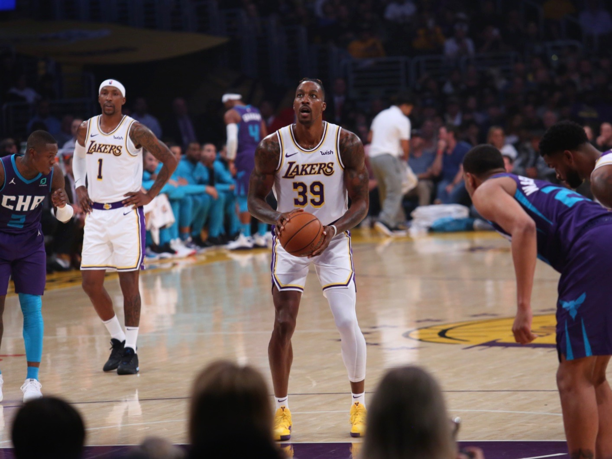
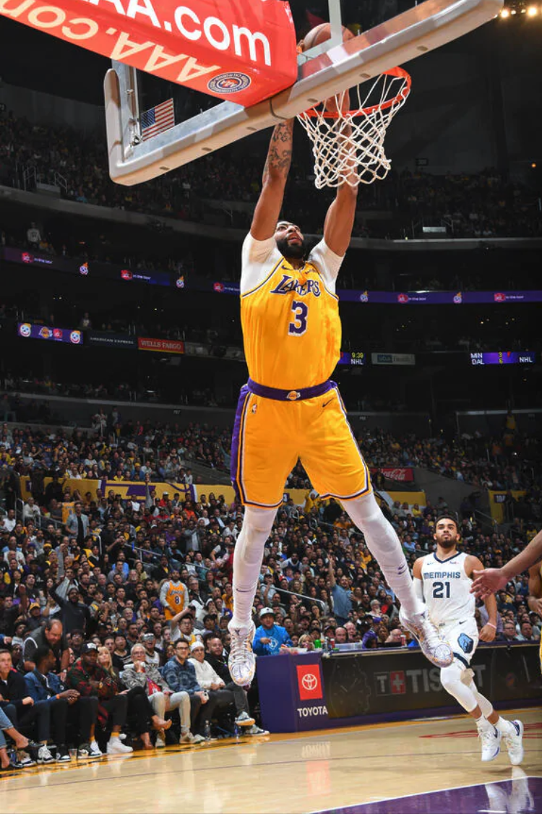
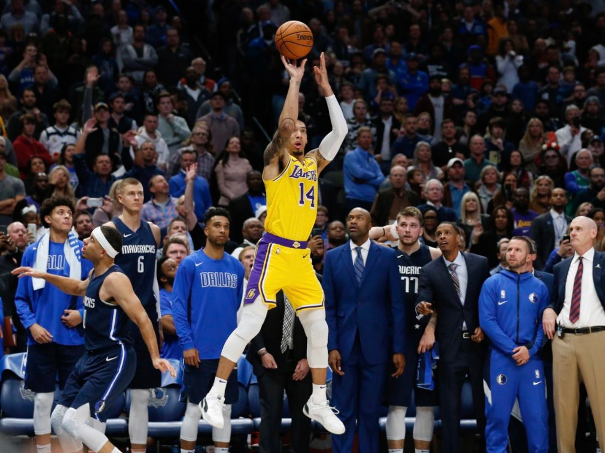
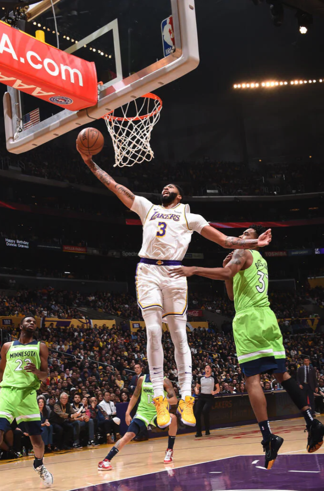
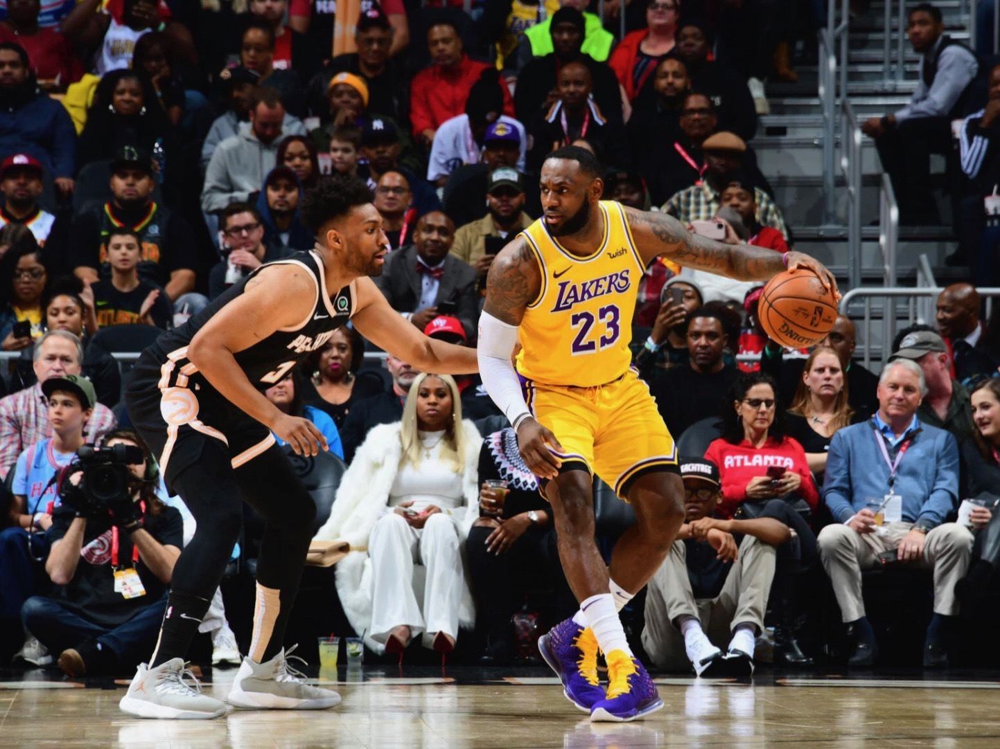
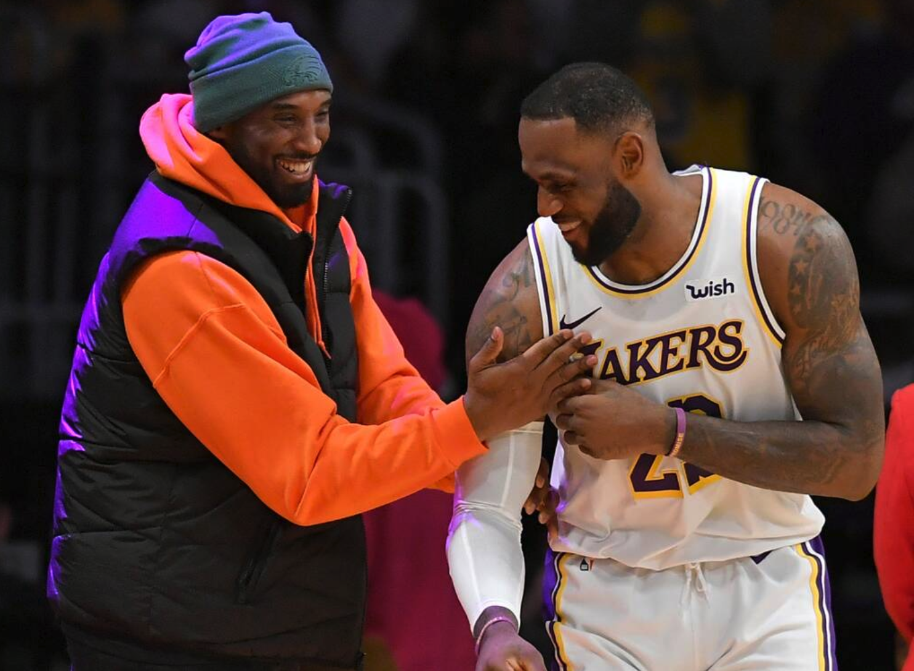
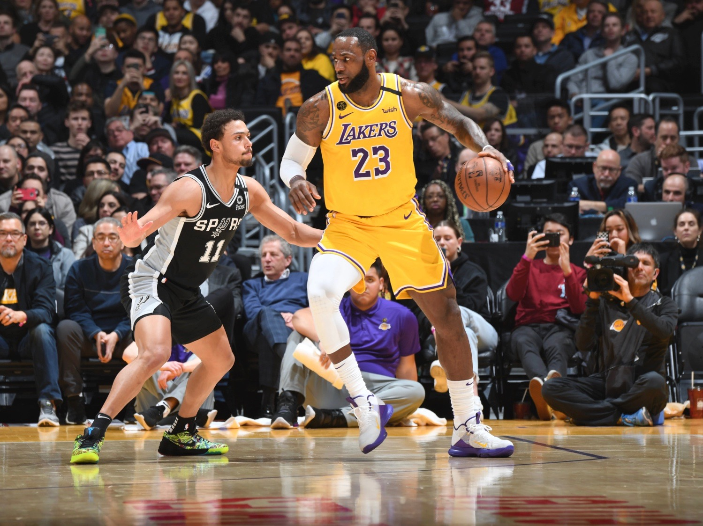

Dwight Howard Proved It
LAL 120 : 101 CHA, 2019/10/27

After losing DeMarcus Cousins to an ACL injury before him ever
suiting up for the purple and gold, the Lakers signed Howard with
a one-year, non-guaranteed, ‘prove it’ deal that the big man
himself asked for.Due to the last unhappy experience Howard had
with the team, Laker fans were still skeptical as to what kind of
impact he would have for the team. Those prejudices were quickly
squashed after only the third game of the season against the
Charlotte Hornets, as the former All-Star played a perfect game,
going 8/8 from the field, scoring 16pts with 19 rebounds, in only
22 minutes of play.
AD Made History with 40/20 against The Grizzlies
LAL 120 : 91 MEM, 2019/10/29

Los Angeles Lakers big man Anthony Davis now has something in
common with a short list of all-time franchise greats. The Brow
went off for a huge 40 points and 20 rebound game against the
Memphis Grizzlies, in just 30 minutes. In the game, Davis went
26-27 from the foul line, breaking the franchise record for free
throws made in a single game, which was previously held by Dwight
Howard. Meanwhile, the Grizzlies just attempted 23 free throws as
a team in last night’s game.
Danny Green’s Game-tying Three against DAL
LAL 120 : 91 DAL, 2019/11/01

It didn’t take long for the 2-times champion guard to prove
himself. In only the fifth game of the season, the Lakers were in
a close game against Luka Donic and the Dallas Mavericks, with the
team down three with 6.4 seconds left on the clock. As James drove
to the basket, he lasered a pass to a semi-open Danny Green in the
corner, who calmly pump-faked a scrambling Seth Curry and nailed
the game-tying 3-pointer to send the game into overtime.
AD Drops 50 on The Timberwolves
LAL 142 : 125 MIN, 2019/12/08

Davis went off for a season-high 50 points, en route to a monster
stat line of 50/7/6, with four blocks and one steal. The Brow was
unconscious from every spot on the floor and showed us the full
range of his skills as a scorer. He led the Los Angeles Lakers to
a huge blowout victory against the Timberwolves 142-125 and
elevated the team’s record to 21-3. This is the game where we were
able to see the full potential of a LeBron James/Anthony Davis
pairing as these two were fully in their bags.
Lakers Hit 17-1 Team Records in December
LAL 101 : 96 ATL, 2019/12/15

After winning the Hawks, the Lakers won the 17 of the last 18
games, with a 10-game and 7-game winnig streak.
LeBron Passes Kobe Bryant on The All-time Scoring List
LAL 91 : 108 PHI, 2020/01/25

On January 25th, by making a simple drive to the basket, LeBron
James passed Kobe Bryant for the third on the all-time scoring
list. This is a moment that will, unfortunately, be forever
intertwined with the tragic passing of one of basketball’s most
legendary players, but that still shouldn’t take away from the
importance of this monumental moment in sports. Kobe Bryant earned
that coveted third spot on the all-time scoring list with
those free-throws he sank against the Timberwolves in 2014.
LeBron Hits Five Straight Threes Against the Spurs
LAL 129 : 102 SAS, 2020/02/04

In the game against the Spurs, LeBron James went supernova from
beyond the arc in the fourth quarter, and single-handedly put the
game on ice. Each three created an even louder roar from the
Staples Center crowd, culminating in a deafening cheer after the
fifth and final 3-pointer from James. LeBron finished the game
with 36 points, 7 rebounds, and 9 assists and went 6-9 from the
3-point line in a blowout victory against the Spurs, 102-129,
moving the Lakers to a 38-11 record.Also, that 4th quarter barrage
vaulted him past Kobe Bryant for 16th on the all-time 3-point made
list, marking yet another feather in the cap of one of the
greatest players of all time.
Back-to-back Wins against Bucks and Clippers
LAL 113 : 103 MIL, 2020/03/06
LAL 112 : 103 LAC, 2020/03/08
These two games were projected to be one of the toughest parts of
the Los Angeles Lakers’ schedule. Back to back games against the
two other teams who many have pegged as favorites to hoist the
Larry O’Brien trophy.
In the game against the Milwaukee Bucks, who had the best record
in the league, and the reigning MVP in Giannis Antetokounmpo,
the Lakers were firmly in the driver’s seat for the entirety of
the game, and a late-game spin-move into a thunderous jam by
LeBron James put the game on ice for good. LeBron ended up with a
cool 37/8/8, and Anthony Davis chipped in with 30 points and 9
rebounds on the way to a convincing 113-103 victory.
The next challenge would be the Los Angeles Clippers. After losses
against the Clippers on opening night and Christmas day, the team
was eager to prove their status as a true championship contender,
and they did just that in their third matchup of the season. This
was a hard-fought, back and forth game from the opening tip, and
was one of the few games of the season that truly had a playoff
atmosphere. LeBron James made a 3-point play with 40 seconds left
to put the game away for good. The team also got important
contributions from the role players. These two victories were huge
for the Lakers as the team was just starting to click heading into
the playoffs. They convincingly beat two teams who were considered
heavy favorites to win the championship, and the team’s chemistry
was at an all-time high.